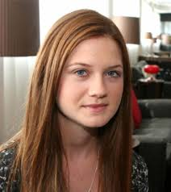

Meet The Team

Neville Longbottom
Lawyer, Founder
Ronald Weasley
Junior Lawyer
Hermoine Granger
Psychologist

Ginny Weasley
Ginny Weasley
Secretary
x
Neville Longbottom graduated from Cambridge University, magna cum laude. He started his law career as a junior lawyer
at Johnson and Johnson's Law Firm. From there, he build a reputation for himself which made his decision to branch off
on his own an excellent decision. He is considered the youngest accomplished lawyer in the tri-state area.
Neville spends his free time volunteering as a big brother at the local community centre. He is community activist and has
taken part in many volunteer projects
x
Ronald Weasley graduated from Portsmouth University and is fluent in three languages. Ronald did a first degree Civil Engineering and Architecture.
After coming across a devastating accident five years ago, he met a little boy that changed his life and his career path. Now Ronald spends
his time doing mainly pro bono work as well as home reconstruction for the less fortunate.
x
Hermoine Granger attended the Oxford University in England. She graduated at the top of her class with an outstanding award and published thesis. Though she has not specialized in any particular area of Psychology, she mainly focuses on child Psychology as she offers her services to the Neville Longbottom Law firm.
x
Ginny Weasley graduated from the Portsmouth University with a BA in Communications. She joined the law firm two years ago and has become a very valuable asset as she provides a calming atmosphere for the clients. Ginny volunteers at health clinics and children centres in her spare time. She also volunteers on reconstruction projects with her brother Ronald.